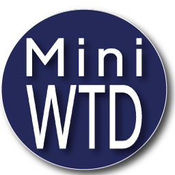

Salariés & candidats
Pour décrire une situation de travail difficile, formaliser les contraintes et préparer un échange avec un manager, un RH ou la médecine du travail.

Work-Test-Demo · Bilan d’aménagement de poste
Mini-WTD est un outil de bilan d’aménagement de poste pensé pour le terrain : salariés, managers, RH, référents handicap, médecine du travail et partenaires du maintien en emploi.
L’objectif est simple : partir de la réalité du travail, identifier les contraintes, mesurer les impacts et proposer des pistes d’adaptation directement exploitables.
Version de démonstration : aucune donnée n’est transmise automatiquement. Les informations restent sous le contrôle de l’utilisateur et de l’organisation utilisatrice.
Pour décrire une situation de travail difficile, formaliser les contraintes et préparer un échange avec un manager, un RH ou la médecine du travail.
Pour disposer rapidement d’un bilan structuré : contexte, impacts, niveau d’urgence, pistes d’aménagement et acteurs à associer.
Pour objectiver les besoins, préparer une demande de financement et documenter les démarches d’aménagement raisonnable.
Contexte, tâches, difficultés, impacts, pistes d’aménagement, acteurs à associer : la page Bilan vous guide étape par étape.
À partir des éléments saisis, l’assistant IA propose une analyse structurée destinée à un RH, un manager, un référent handicap ou un médecin du travail.
Le texte généré peut être copié dans vos outils internes, vos comptes-rendus ou vos dossiers de maintien en emploi. Il sert de base à un plan d’action daté.
La démarche WTD – Work Test Demo permet d’observer une situation de travail réelle ou simulée afin de comprendre ce qui bloque, ce qui fatigue, ce qui désorganise et ce qui peut être adapté.
L’enjeu n’est pas de tester la personne, mais d’analyser le poste : gestes, rythme, environnement, outils, charge cognitive, déplacements, bruit, lumière et organisation.
Une page de démonstration permet de tester les réglages d’accessibilité : taille du texte, contraste, espacement, thème clair ou sombre et lecture vocale.
Cette démonstration sert à montrer concrètement comment Mini-WTD peut être utilisé par des personnes ayant des besoins différents de lecture, de confort visuel ou d’accès numérique.
Un salon d’accueil virtuel peut être organisé pour présenter Mini-WTD, répondre aux premières questions et préparer une démonstration à distance.
Cet échange peut servir à présenter la démarche, expliquer les moyens nécessaires pour tester WTD en situation réelle, et identifier un cadre de démonstration adapté à une entreprise, un CRPH, un service RH ou un partenaire du maintien en emploi.
Le lien Google Meet est transmis après prise de contact afin de garder un cadre d’échange sécurisé et maîtrisé.
Mini-WTD part d’un principe simple : la personne n’est jamais “de trop”. L’objectif n’est pas de trier entre “valide” et “non valide”, mais de comprendre la réalité du travail et d’identifier les adaptations possibles : matériel, organisation, numérique, accompagnement.
L’assistant IA Mini-WTD ne justifie jamais une exclusion. Il éclaire les risques, propose des aménagements et rappelle les acteurs à mobiliser pour construire des solutions dignes, réalistes et suivies.
« On ne compare pas les humains. On adapte le poste, pas la personne. »
Mini-WTD ne remplace ni le jugement professionnel, ni la médecine du travail. Il fournit un document clair et actionnable pour :
Pour organiser une démonstration ou tester Mini-WTD dans votre structure, utilisez la page Contact.
Mini-WTD peut être présenté à une structure médico-sociale, un centre de réadaptation, un service RH, un référent handicap, un organisme de formation ou un partenaire du maintien en emploi.
L’objectif d’une démonstration est de montrer comment l’outil peut aider à structurer une situation de travail, préparer un échange professionnel et produire une base de bilan compréhensible par tous les acteurs.